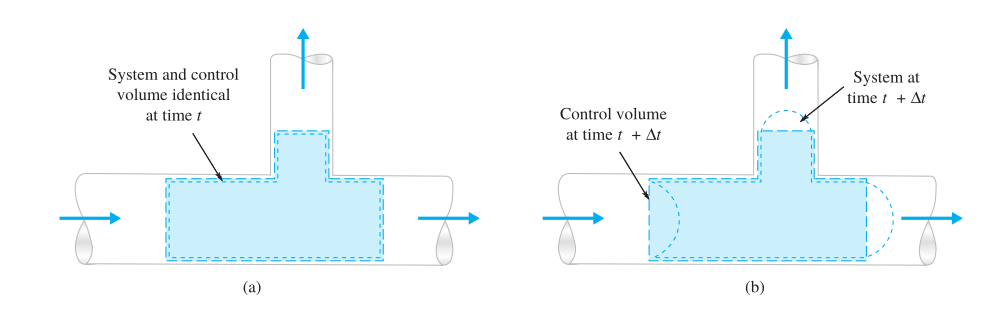

Elementary Fluid Mechanics
CE-ENGIN 357 - Fall 2024
Application of physical laws
- Fluid mechanics based on physical laws
- Easier to work with control volumes 
- Mass flows across boundaries of control volume
Extensive properties
- Extensive properties depend on system mass (e.g., momentum, energy)
- Intensive properties independent of mass (e.g., pressure, density)
- Physical laws deal with time rates of change in extensive properties
- Need relationship between time rates of change for a system and for a control volume
Reynolds Transport Theorem
Conversion differs depending on type of control volume
RTT derivation
\[B_{\text{sys},t} = B_{\text{CV},t}\]
\[B_{\text{sys},t+\Delta t} = B_{\text{CV},t+\Delta t} - B_{\text{I},t+\Delta t} + B_{\text{II},t+\Delta t}\]
\[\dfrac{B_{\text{sys},t+\Delta t} - B_{\text{sys},t}}{\Delta t} = \dfrac{B_{\text{CV},t+\Delta t} - B_{\text{CV},t}}{\Delta t} - \dfrac{B_{\text{I},t+\Delta t}}{\Delta t} + \dfrac{B_{\text{II},t+\Delta t}}{\Delta t}\]
Taking the limit as \(\Delta t \rightarrow 0\) \[\dfrac{dB_{\text{sys}}}{dt} = \dfrac{dB_{\text{CV}}}{dt} - \dot{B}_{\text{in}} + \dot{B}_{\text{out}}\]
\[B_{\text{I},t+\Delta t} = b_1 m_{\text{I},t+\Delta t} = b_1 \rho_1 V\kern-0.8em\raise0.3ex-_{\text{I},t+\Delta t} = b_1 \rho_1 V_1 \Delta t A_1\]
\[\dot{B_{\text{in}}} = \dot{B_{\text{I}}} = \lim_{\Delta t \rightarrow 0} \dfrac{B_{\text{I},t+\Delta t}}{\Delta t} = \lim_{\Delta t \rightarrow 0} \dfrac{b_1 \rho_1 V_1 \Delta t A_1}{\Delta t} = b_1 \rho_1 V_1 A_1\]
\[\dfrac{B_{\text{sys}}}{dt} = \dfrac{dB_{\text{CV}}}{dt} - \dot{B}_{\text{in}} + \dot{B}_{\text{out}}\]
The time rate of change of property \(B\) of the system is equal to the time rate of change of \(B\) of the control volume plus the net flux of \(B\) out of the control volume by mass crossing the control surface.
Arbitrary fixed control volume
\[b = \dfrac{dB}{dm}\]
\[B_{\text{CV}} = \int_{\text{CV}} b dm = \int_{\text{CV}} b \rho dV\kern-0.8em\raise0.3ex-\]
\[\boxed{\dfrac{d}{dt}\left(B_{\text{sys}}\right) = \dfrac{d}{dt}\left( \int_{\text{CV}} b \rho dV\kern-0.8em\raise0.3ex- \right) + \int_{\text{CS}} b \rho V \cos{\theta} dA_{\text{out}} - \int_{\text{CS}} b \rho V \cos{\theta} dA_{\text{in}}}\]
Remember that \[\vec{V} \cdot \vec{n} = V_n\]
\[\boxed{\dfrac{d}{dt} \left( B_{\text{sys}} \right) = \dfrac{d}{dt} \left( \int_{\text{CV}} b \rho dV\kern-0.8em\raise0.3ex- \right) + \int_{\text{CS}} b \rho \left( V \cdot n \right) dA}\]
Control volume moving at constant velocity
CV is moving uniformly at velocity \(V_s\)
Relative velocity \[V_r = V - V_s\]
\[\dfrac{d}{dt} \left( B_{\text{sys}} \right) = \dfrac{d}{dt} \left( \int_{\text{CV}} b \rho dV\kern-0.8em\raise0.3ex- \right) + \int_{\text{CS}} b \rho \left( V_r \cdot n \right) dA\]
Deformable and moving CV

\[V_r = V(r,t) - V_s(r,t)\]
\[\boxed{\dfrac{d}{dt} \left( B_{\text{sys}} \right) = \dfrac{d}{dt} \left( \int_{\text{CV}} b \rho dV\kern-0.8em\raise0.3ex- \right) + \int_{\text{CS}} b \rho \left( V_r \cdot n \right) dA }\]
1-D flux term approximations
\[\dfrac{d}{dt}\left( B_{\text{sys}} \right) = \dfrac{d}{dt} \left( \int_{\text{CV}} b dm \right) + b_2 (\rho A V)_2 + b_3 (\rho A V)_3 + b_5 (\rho A V)_5\] \[ - b_1 (\rho A V)_1 - b_4 (\rho A V)_4\]
Quiz
Example
Find the rate of the water level rise if water is coming through a 0.1 m2 pipe with 0.5 m/s, and exiting at 0.2 m3/s. The container has a circular cross section with a 0.5 m diameter.
Solution
\[\dfrac{d}{dt}(m_{\text{sys}}) = \dfrac{d}{dt} \int_{\text{CV}} \rho dV\kern-0.8em\raise0.3ex- + \rho (-V_1)A_1 + \rho V_2 A_2\]
\[\dfrac{d}{dt} \int_{\text{CV}} \rho dV\kern-0.8em\raise0.3ex- + \rho (-V_1)A_1 + \rho V_2 A_2 = 0\]
\[ \dfrac{d}{dt}(\rho h \pi D^2 / 4) - \rho V_1 A_1 + \rho Q_2 = 0\]
\[ \Rightarrow \dfrac{\pi D^2}{4} \dfrac{dh}{dt} - V_1 A_1 + Q_2 = 0\]
\[\dfrac{dh}{dt} = \dfrac{V_1 A_1 - Q_2}{\pi D^2 / 4} = \dfrac{(0.5)(0.1)-0.2}{\pi(0.5^2)/4} = -0.764\,\mathrm{m/s}\]